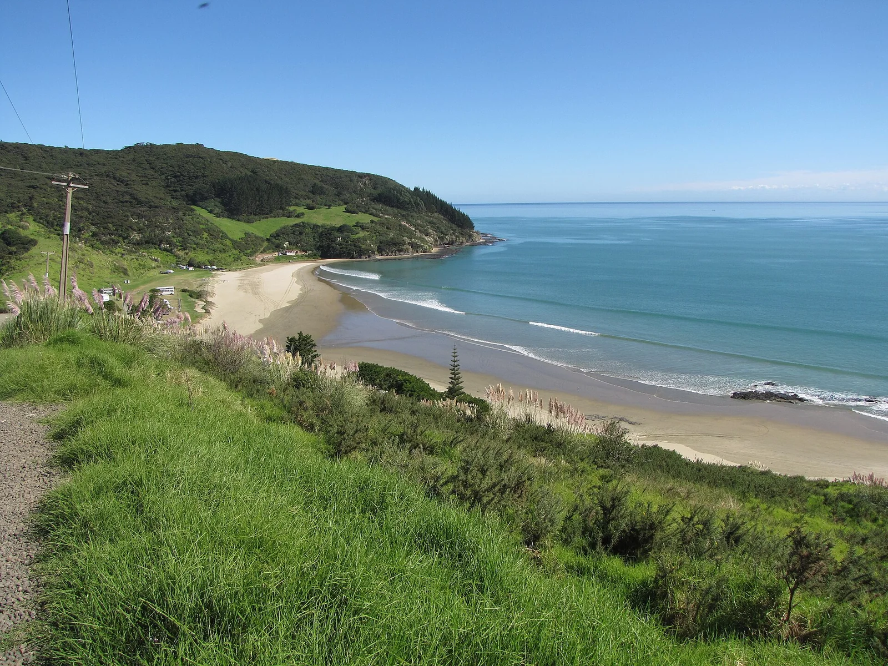

Shipwreck Bay — Ahipara
Nouvelle-Zélande · surf, bodyboard

À l'extrémité sud de Ninety Mile Beach, une série de pointes rocheuses enchaîne des gauches qui peuvent se relier sur des centaines de mètres.
- Lieu
- Nouvelle-Zélande
- Niveau
- Intermédiaire
- Activités
- surf, bodyboard
- Type d'eau
- Mer / océan
- Coordonnées
- -35.17, 173.13 (position approximative du secteur)
Dangers à connaître
- Fond rocheux irrégulier, plateaux découvrants.
- Courant qui longe les pointes.
- Région isolée, peu de monde en cas de problème.
Le conseil d'Ocean Buddy
Commence par la pointe la plus au sud : c'est la plus indulgente des trois.
Ouvrir dans Ocean Buddy Télécharger sur l'App Store
Source : Description historique Ocean Buddy · vérification externe en attente.